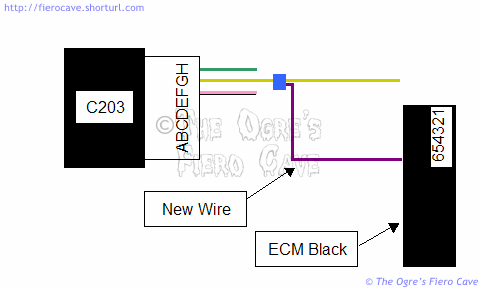

Go Home
Site Map
Go Home
Site Map
IGOR! Bring Another Brain!
WARNING! This is an Expert Level project and applies only to the 1227748 ECM. While the ECM is physically simple to work on, debugging problems is not. Modification to ECM circuits must be done very carefully. DO NOT experiment with the ECM and alternate PROM chips without an ECM Scanner!
WARNING! The 1227748 ECM contains integrated Cruise Control logic. Failure or improper calibration of the Vehicle Speed Sensor circuit can cause potentially dangerous Cruise Control problems. (Like Cruise Control isn't screwy enough to start with...)
WARNING: I strongly recommend you DO NOT try PROM chips from other motors. You might only set weird codes in the ECM. You could cause the motor to self-destruct.
NOTICE! The reader assumes all risk and liability associated with the modifications described in this document. If you goof around with the ECM and fry it or the PROM, too freaking bad.
The PROM hacking info in this article is for advanced users only. If your PROM has fried then order a new one using the numbers below.
DIS PROM update
The following PROMs are listed as current numbers thru GM Parts Direct. They can also be ordered thru places that carry AC Delco using the same part number. The PROM codes shown are from AC Delco.com.
You don't have a Scan tool? Try this trick.
|
AC/GM # |
Transmission |
Replaces PROM labeled with code: |
|---|---|---|
|
16143455 |
M/TRNS(MT2) |
6756ALRU, 1664ANAL, 0327ASLB, (3638ATBT) |
|
16143453 |
M/TRNS(MT2) |
3554HHM, 9544ACMH, 2806ANBP, 9308ASCT, (3563ATBS) |
|
16143459 |
A/TRNS(MD9) |
3550BXB, 9538ACMF, 6770ALWN, 2720ANBN, (3642ATCA) |
|
16143570 |
A/TRNS(MD9) |
6078ALRT, 1661ANAK, (3572ATBW) |
Note that these are the same part numbers from Table 2 in the PROM TSB some of you have read. The PROM code in parenthesis would be the one in the "New PROM label" column.
Try ACDelco dealers. ACDelco shows three part #. (List as of 8/11)
Try GM Parts Direct, Nalley GM and other Dealer's part online operations.
Also try a place that carries Blue Streak. They claim to have loads of OE PROMs and even updated PROMs to fix various problems.
ECM compatibility
As I've mentioned in various threads, Pontiac Grand AM and Olds Cutlass Calais with the DIS 4 cylinder use the same ECM as 87-88 Fiero. Other potential sources and data on choosing are at the end of the article.
While the ECM is the same, the PROM is not. In Most cases, you will be installing the Fiero PROM into the replacement ECM. You should always use Fiero PROM chips whenever possible.
What happens if someone has fried the Fiero PROM? Are their others that work?
Try the updated PROM first! I can't push this point enough.
Yes, it is possible to use PROM chips from other cars. Before you can do so you have to know how this ECM works and how to alter the VSS circuit.
The donor car must have:
- The same motor. VIN R or U in Fiero case. (There are at least 3 motors using the 1227748 ECM.)
- The same Transmission or as close as possible.
We'll cover why this is important in ECM Sources below...
ECM configuration/hacking
Unlike most other ECM units, the 1227748 ECM can be configured to accept a buffered VSS signal or the VSS can be wired directly to it. The choice of which input the ECM will use is programmed into the PROM. Normally only one input is actually wired. If the PROM selects the wrong input, the ECM will set code 24 and Cruise Control will not operate. (An ECM scanner will also report 0mph when the car is moving.)
In the FWD cars tested to date, the PROM is programmed to select direct feed VSS instead of a buffered VSS like Fiero uses. In order to use those PROM chips we have to patch the Fiero VSS directly to the ECM.
Hacking VSS
Warning! Disconnect the battery before making this modification!
To use PROMs set for direct input VSS in Fiero, we need to patch the ECM Black connector Terminal 6 to connector C203 Terminal G. (Terminal markings are molded into the connector shells.)
C203 is the large connector sitting below the ECM. Terminal G contains a Yellow wire between a Green and Pink/Black wire.

In Fiero Terminal position 6 on the Black ECM connector is normally empty. Terminals for the ECM connectors are MotorMite # 85323. Optionally you can salvage some terminals with wire from a donor car. (Cut the wire as long as you can. You should be able to do this with only one splice.)
To remove the pink cover from the ECM connector, depress the two tabs showing through the main housing on the "small end" of the shell. To release a terminal, insert a paper clip into the hole on the ECM side of the shell and then pull the terminal out the back.
Note. Do Not alter the OE wiring in any other way. You want the car to continue to accept a Fiero PROM. Once this patch is made, the car will accept either the FWD PROM or the Fiero PROM and still see the VSS.
You can splice the yellow wire described above with any method you like. Just make sure it can't come loose or short. The blue 3M "ScotchLock" speed taps are good for this. Just squash the thing onto the wires, close the lid and you're done with it.
Does the patch cause any problems?
The patch will not cause trouble as long as it is done right. The VSS has enough drive voltage/current to handle both the speedometer and the ECM feed. The ECM simply ignores the unused input when both circuits are wired.
Why would we want to use alternate PROM chips?
The big reason is that these ECM units are allot easier to find in the FWD cars. If something happened to fry the Fiero PROM, we need an alternate that will work. Many of these alternate PROM chips will allow the car to run properly as long as we lie to them about the VSS.
Another reason is that the "corrective" PROM chips listed in a GM TSB are $60 each from the dealer. (They are allot cheaper thru GM Parts Direct!) With the above patch, we can play with various PROMs from later models of cars with this motor. This is the reason I worked out the above patch. (I did this patch before finding the PROMs for cheap.)
Some of it is just to see what the different programming will do. I did it just to see things like: Does it solve the problems in the TSB? Will I gain any power? Will it idle any better? Will it get even more MPG?
Test Results?
I've tested PROM chips from the 88 Grand Am (VIN U) and the 87 Cutlass Calais (VIN U). (I have 87SC, Automatic transmission... VIN R) I've had no major problem with either. The one from the Calais ran ok but idled like crap with the AC on. The Grand Am one is in it now. It seems to run a little better then the OE one. (Now I've got new Fiero Update PROM.)
I simply can't test every PROM available for this ECM. That means certain Grand Am or Calais PROM chips may cause trouble. You probably won't do any damage but you could get Error 24 and Cruise Control may not work right. If you have problems, the only way to figure it out is with an ECM scanner.
I have no plans to test chips from 2.0l or 2.2l engines. If you try a PROM from one of the other motors, be extremely careful. These chips can potentially fry the motor. You must have an ECM scanner and other tools to make sure the PROM is running right.
Where to find ECM's
The ECM is located under the passenger side of the dash on both Grand Am and Olds Cutlass Calais. I think in Grand Am they used the DIS motor from 87-89. In Olds I think they used them from 87-91. Try to find ECM units with the label on them. Don't use one until you are sure it's correct. (The ones I've actually used are 88 Grand Am and 87 Calais. I've seen the DIS motor in 91 Calais but haven't been able to check that ECM.)
If you are harvesting the ECM, cut out the connectors with as much wire as you can get. This will give you a bunch of wired spare terminals.
The GM service replacement ECM's that I've seen are also labeled with the 1227748 part number.
Aftermarket replacements may have the part GM number on them of not. There is no standard with them.
Other ECM Sources
ACdelco list of models uses 1227748 ECM.
DIY-EFI.org reports this ECM is used with the following motors. I have not verified the data.
- 1987-91 2.0 OHC L4 TBI "K" LT2
- 1990-91 2.2 L4 TBI "G" LM3
- 1987-92 2.5 L4 TBI "R" LR8 [Fiero] (exc. W body)
- 1987-91 2.5 L4 TBI "U" L68
Source: DIY-EFI.ORG
I have seen a version of the DIS motor used in the S10 truck. That ECM can't be used in Fiero. The motor is similar but uses an EGR solenoid like the Fiero V6 motors. The ECM and wiring are completely different.
Note! Make sure the PROM is correct for the transmission. If possible, you want them to match Stick/Auto, number of gears, and final drive ratio. At the very least, they must match Stick or Auto.
If you put a stick chip in an automatic car, you'll have TC lock problems and probably other odd things. I'm not sure what an auto chip would do in a stick car other than make the shift light activate over 35mph.
Chip selection for an automatic is easier. The TH125 automatics are mostly the same except for some variation in final drive. For the two chips I've tested, I didn't look at the transmission beyond it being a TH125 automatic. Either they were close enough or the chip didn't care.
In a stick car, they have to match gear count and finals better than an automatic. If they don't match you'll have the shift light going nuts. (Allot of people hate that thing and pull the bulb even when it works right.) You might get some ECM codes depending on how different the transmission is from what the chip thinks is there.